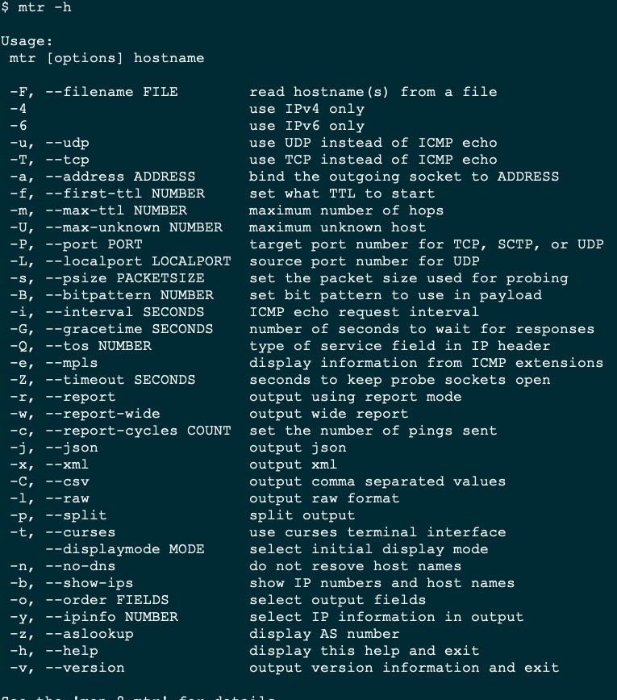
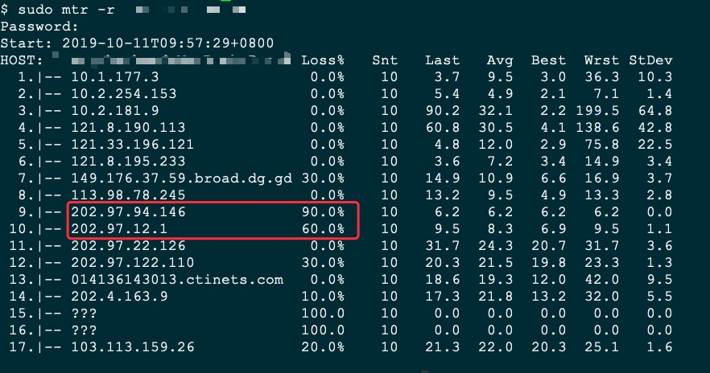

mtr
vps丢包非常严重，mtr命令辅助分析原因
mtr生成路由图
丢包分析
最近梯子网络质量非常不稳定，ping包分析丢包率20%！老子是交了钱的人，这样的服务岂能忍受。问题反馈到vps供应商，对方要我提供mtr路由图，第一次听说这个命令，感觉挺有意思。
一般在windows系统来判断网络连通性用ping和tracert，ping用来判断丢包率，tracert可以用来跟踪路由，在Linux中有一个更好的网络连通性判断工具，它可以结合ping、nslookup和tracert来判断网络的相关特性。
安装
mtr不是linux系统内置的，通过以下方式安装：
centos : yum -y install mtr
ubuntu : apt-get install mtr
macos : brew install mtr
命令选项
命令安装完之后，使用mtr -h查看命令选项

选项太多，不逐一介绍了，常用的几个：
1 | mtr -h 提供帮助命令 |
使用mtr
使用mtr检查路由情况:mtr -r $my_ip
结果显示：

结果的每一列详解：
1 | HOST： 显示的是IP地址和本机域名 |
可以看出中间有几个IP丢包率非常高的，应该就是环节出现问题。
最后，把mtr结果丢给客服解决。